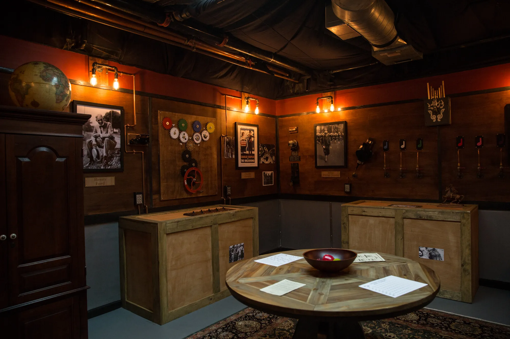

방탈출카페 리스트
방탈출러 모집방
방탈출 꿀팁 모음
검색
전체
최근 인기순
테마
난이도
가격
위치

돈을 내고 방에 제 발로 걸어 들어가 갇힌 다음 탈출하는 기묘한 게임임. 한판에 16000~20000원 정도이고, 제한시간은 스탠다드 60분. 그런데 45분이나 75분, 90분 등등의 베리에이션도 있긴 함. 이 게임의 묘미는 한번 들어갔던 방은 웬만하면 다시 들어가지 않기 때문에 brand new everyday라는 것. 머리 쓰기 좋아하는 사람들에게 추천함.
사라진 그녀에 버금갈 정도로 엄청난 스케일을 자랑한다.우선 ‘오픈 룸’인지라 실제로 모르는 사람들과 한 방에 들어가게 되므로 그 사이에서 정신을 놓지 않도록 주의해야 한다. 무엇보다도 협동이 중요하다. 정말이지 대단한 방이었다. 무조건 가야한다. 홍콩 형들 잘 지내..?
방탈출의 클리셰와도 같은 두 가지 테마가 있는데, 살인마와 탈옥이다. 이 방은 널리고 널린 탈옥 테마 중에서도 단연 돋보인다. 탈옥을 해본 적은 없지만 탈옥을 한다면 정말로 이런 느낌일 것 같다. 난이도는 꽤나 어려운 편. 정말로 즐겁게 플레이했다. 여기도 무조건 가야한다.
정말 재밌다. 정말 신선하다. 상상하지도 못한 스타일의 방이었다. 무조건 가야한다. 딱 한 가지 아쉬운 점이 있다면 상식을 요구한다는 것인데, 뭐 사실 막히면 힌트나 때려맞추기로 해결할 수 있다.
놀랍게도 친구의 아버지와 함께 가게 되었다. 80년대를 묘사하는 소품들로 장식되어 있어 나에게는 응팔과 정팔이ㅠㅠㅠㅠㅠㅠㅠㅠㅠㅠㅠㅠㅠㅠ를, 아버지께는 당시의 향수를 불러일으켰다. 전체적으로 평이한 문제들이 많고, 그 와중에도 신선함을 놓치지 않는다.